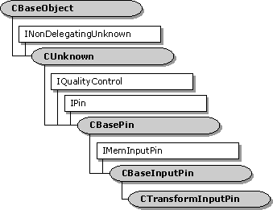

description: The CTransformInputPin class implements an input pin that is used by the CTransformFilter class. ms.assetid: 032da1bb-448d-48ea-ab3d-f721d790637f title: CTransformInputPin class (Transfrm.h) ms.topic: reference ms.date: 4/26/2023 topic_type:
[The feature associated with this page, DirectShow, is a legacy feature. It has been superseded by MediaPlayer, IMFMediaEngine, and Audio/Video Capture in Media Foundation. Those features have been optimized for Windows 10 and Windows 11. Microsoft strongly recommends that new code use MediaPlayer, IMFMediaEngine and Audio/Video Capture in Media Foundation instead of DirectShow, when possible. Microsoft suggests that existing code that uses the legacy APIs be rewritten to use the new APIs if possible.]

The CTransformInputPin class implements an input pin that is used by the CTransformFilter class.
Typically, you do not need to derive from this class. Most of the methods in this class call corresponding methods on the CTransformFilter class, which you can override. If you derive from this class, you must override the filter's CTransformFilter::GetPin method to create instances of your derived class.
| Protected Member Variables | Description |
|---|---|
| m_pTransformFilter | Pointer to the owning filter. |
| Public Methods | Description |
| CTransformInputPin | Constructor method. |
| CheckConnect | Determines whether a pin connection is suitable. |
| BreakConnect | Releases the pin from a connection. |
| CompleteConnect | Completes a connection to another pin. |
| CheckMediaType | Determines if the pin accepts a specific media type. |
| SetMediaType | Sets the media type for the connection. |
| CheckStreaming | Determines whether the pin can accept samples. Virtual. |
| CurrentMediaType | Retrieves the media type for the current pin connection. |
| IPin Methods | Description |
| QueryId | Retrieves an identifier for the pin. |
| EndOfStream | Notifies the pin that no additional data is expected. |
| BeginFlush | Begins a flush operation. |
| EndFlush | Ends a flush operation. |
| NewSegment | Notifies the pin that media samples received after this call are grouped as a segment. |
| IMemInputPin Methods | Description |
| Receive | Receives the next media sample in the stream. |
| Requirement | Value |
|---|---|
| Header | Transfrm.h (include Streams.h) |
| Library | Strmbase.lib (retail builds); Strmbasd.lib (debug builds) |